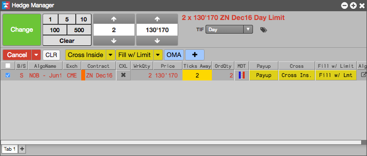

You can also change the price and quantity of a working hedge order from the Hedge Manager. You can also modify the order's TIF (time in force).
To change the price or quantity of an order:
Show the order control panel (from the context menu), if necessary.
Select the order you want to modify.

Update the order as desired, and click Change.